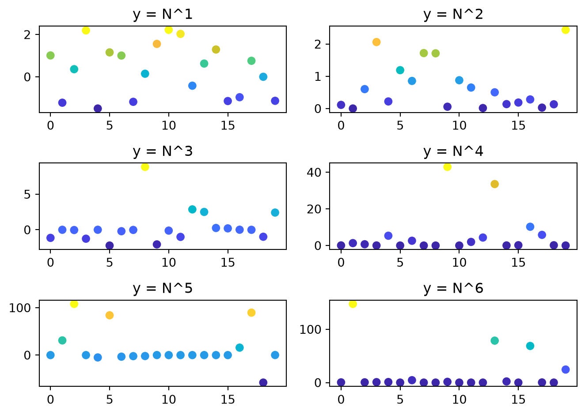

import sciris as sc
od = sc.odict(a=['some', 'strings'], b=[1,2,3])
print(od)#0: 'a': ['some', 'strings']
#1: 'b': [1, 2, 3]Needing a better way of ordering dictionaries was one of the original inspirations for Sciris back in 2014. In those dark days of Python <=3.6, dictionaries were unordered, which meant that dict.keys() could give you anything. (And you still can’t do dict.keys()[0], much less dict[0]). This tutorial describes Sciris’ ordered dict, the odict, its close cousin the objdict, and its pandas-powered pseudorelative, the dataframe.
odictIn basically every situation except one, an odict can be used like a dict. (Since this is a tutorial, see if you can intuit what that one situation is!) For example, creating an odictworks just like creating a regular dict:
#0: 'a': ['some', 'strings']
#1: 'b': [1, 2, 3]Okay, it doesn’t exactly look like a dict, but it is one:
Keys: ['a', 'b']
Values: [['some', 'strings'], [1, 2, 3]]
Items: [('a', ['some', 'strings']), ('b', [1, 2, 3])]Looks pretty much the same as a regular dict, except that od.keys() returns a regular list (so, yes, you can do od.keys()[0]). But, you can do things you can’t do with a regular dict, such as:
Item 0 is called a and has value ['some', 'strings']
Item 1 is called b and has value [1, 2, 3]We can, as you probably guessed, also retrieve items by index as well:
Remember the question about the situation where you wouldn’t use an odict? The answer is if your dict has integer keys, then although you still could use an odict, it’s probably best to use a regular dict. But even float keys are fine to use (if somewhat strange).
You might’ve noticed that the odict has more verbose output than a regular dict. This is because its primary purpose is as a high-level container for storing large(ish) objects.
For example, let’s say we want to store a number of named simulation results. Look at how we’re able to leverage the odict in the loop that creates the plots
import numpy as np
import matplotlib.pyplot as plt
class Sim:
def __init__(self, n=20, n_factors=6):
self.results = sc.odict()
self.n = n
self.n_factors = n_factors
def run(self):
for i in range(self.n_factors):
label = f'y = N^{i+1}'
result = np.random.randn(self.n)**(i+1)
self.results[label] = result
def plot(self):
with sc.options.context(jupyter=True): # Jupyter-optimized plotting
plt.figure()
rows,cols = sc.getrowscols(len(self.results))
for i,label,result in self.results.enumitems(): # odict magic!
plt.subplot(rows, cols, i+1)
plt.scatter(np.arange(self.n), result, c=result, cmap='parula')
plt.title(label)
sc.figlayout() # Trim whitespace from the figure
sim = Sim()
sim.run()
sim.plot()
We can quickly access these results for exploratory data analysis without having to remember and type the labels explicitly:
Sim results are
#0: 'y = N^1':
array([-1.44611421, 0.53136037, -0.74684019, -1.08343476, -1.20010067,
-1.29220144, 1.01893806, 1.1293201 , -0.45519507, 1.5901227 ,
-0.35795953, -1.03262014, 0.64239683, -0.35711657, -2.38980179,
0.90721642, -1.14698859, -0.76448829, 0.32742606, 0.8259777 ])
#1: 'y = N^2':
array([1.13463400e+01, 4.29426549e+00, 1.44127100e-01, 1.94873645e-01,
1.09651783e-01, 1.32212884e+00, 2.43148710e-01, 1.42908894e-01,
1.73070310e-01, 2.64620064e+00, 3.82604345e-02, 7.86119874e-03,
7.85954163e-01, 3.01933641e-01, 3.25465168e-01, 9.79228642e-01,
3.56816027e-03, 1.63838336e-01, 3.80158493e-02, 2.67413453e-01])
#2: 'y = N^3':
array([-9.78844665e+00, -8.68734180e-03, -1.11551929e-01, 4.74039042e+00,
7.29562129e-02, 8.09536718e-01, 1.42890344e-01, 3.21369011e+00,
-2.38626781e-01, -3.65748352e+00, -8.22931582e-01, -7.24751498e-01,
3.06000313e-02, 6.86880007e-01, 2.94799178e-02, -3.76418331e-01,
-1.60711011e+00, -1.62677704e+00, 2.77847569e-01, 7.58823593e+00])
#3: 'y = N^4':
array([1.14191660e-01, 3.86499158e-02, 1.30773697e-01, 3.25828436e+01,
1.79210858e-02, 4.00758943e-02, 1.53970559e-02, 2.68747823e+01,
4.28358915e+00, 5.15813867e+00, 1.01972364e+01, 2.23539137e+01,
1.07224634e+01, 1.08676630e-03, 3.37968647e+01, 7.53374454e-01,
6.11676159e-01, 3.66359698e-02, 1.60101312e-02, 4.52808111e+00])
#4: 'y = N^5':
array([ 3.63811952e+00, 7.56056336e-07, 6.19518800e-11, -9.48770900e-02,
-1.58185702e+02, -8.63027330e-01, -1.55257095e-03, -2.22583454e+01,
-3.43839607e-02, 9.35751791e-03, -9.66962319e-01, -2.28599720e+00,
-1.81059424e-03, -1.86447859e-02, 1.76216939e+00, 2.35998039e-10,
-8.12295545e-01, 7.67303415e+01, -2.85478588e-02, -7.08573722e+00])
#5: 'y = N^6':
array([8.90783922e+02, 4.30095057e-01, 3.84708233e-01, 8.10300275e+00,
3.70464500e-02, 2.39440389e+00, 1.68729442e+02, 3.13225183e-10,
5.58600718e+00, 1.85813882e-02, 1.47280068e+01, 1.80934689e+00,
1.65403774e+01, 2.03864572e-02, 3.88854788e-01, 6.74754392e+00,
1.66280810e-04, 3.57067665e-02, 1.94073316e-03, 2.41746265e+01])
The first set of results is
[-1.44611421 0.53136037 -0.74684019 -1.08343476 -1.20010067 -1.29220144
1.01893806 1.1293201 -0.45519507 1.5901227 -0.35795953 -1.03262014
0.64239683 -0.35711657 -2.38980179 0.90721642 -1.14698859 -0.76448829
0.32742606 0.8259777 ]
The first set of results has median
-0.407 (95% CI: -1.942, 1.371)This is a have-your-cake-and-eat-it-too situation: the first set of results is correctly labeled (sim.results['y = N^1']), but you can easily access it without having to type all that (sim.results[0]).
objdictWhen you’re just writing throwaway analysis code, it can be a pain to type mydict['key1']['key2'] over and over. (Right-pinky overuse is a real medical issue.) Wouldn’t it be nice if you could just type mydict.key1.key2, but otherwise have everything work exactly like a dict? This is where the objdict comes in: it’s identical to an odict (and hence like a regular dict), except you can use “object syntax” (a.b) instead of “dict syntax” (a['b']). This is especially handy for using f-strings, since you don’t have to worry about nested quotes:
Checking ob[0] = ['some', 'strings']
Checking ob.key1 = ['some', 'strings']
Checking ob["key1"] = ['some', 'strings']In most cases, you probably want to use objdicts rather than odicts just to have the extra flexibility. Why would you ever use an odict over an objdict? Mostly just because there’s small but nonzero overhead in doing the extra attribute checking: odict is faster (faster than even collections.OrderedDict, though slower than a plain dict). The differences are tiny (literally nanoseconds) so won’t matter unless you’re doing millions of operations. But if you’re reading this, chances are high that you do sometimes need to do millions of dict operations.
The Sciris sc.dataframe() works exactly like pandas pd.DataFrame(), with a couple extra features, mostly to do with creation, indexing, and manipulation.
Any valid pandas dataframe initialization works exactly the same in Sciris. However, Sciris is a bit more flexible about how you can create the dataframe, again optimized for letting you make them quickly with minimal code. For example:
It’s not a huge difference, but the Sciris one is shorter. Sciris also makes it easier to define types on dataframe creation:
x y z
0 a 1.0 True
1 b 2.0 False
2 c 3.0 TrueYou can also define data types along with the columns:
x y z
0 a 1.0 True
1 b 2.0 False
2 c 3.0 TrueThe df.disp() command will do its best to show the full dataframe. By default, Sciris dataframes (just like pandas) are shown in abbreviated form:
0 1 2 3 4 5 6 \
0 0.022437 0.347024 0.928749 0.598027 0.064296 0.174799 0.682645
1 0.384862 0.330465 0.417581 0.509425 0.204998 0.046149 0.267296
2 0.295849 0.885216 0.367180 0.168756 0.347129 0.457618 0.123138
3 0.657364 0.307905 0.663238 0.131116 0.516454 0.848086 0.798420
4 0.261597 0.599403 0.120822 0.636596 0.832165 0.096545 0.156900
.. ... ... ... ... ... ... ...
65 0.048039 0.676630 0.608643 0.862830 0.902662 0.826011 0.770834
66 0.858294 0.591060 0.148441 0.499825 0.056389 0.787187 0.905235
67 0.219136 0.057179 0.549187 0.225285 0.948819 0.582966 0.001776
68 0.512266 0.052312 0.651249 0.583651 0.318309 0.273116 0.148942
69 0.795738 0.732136 0.019719 0.449519 0.391415 0.536133 0.871336
7 8 9
0 0.673245 0.837585 0.613296
1 0.318285 0.523530 0.591025
2 0.584132 0.687632 0.057845
3 0.746963 0.177001 0.856188
4 0.037560 0.949925 0.523207
.. ... ... ...
65 0.603428 0.361056 0.163399
66 0.634370 0.906866 0.396382
67 0.573180 0.236756 0.059411
68 0.304995 0.376219 0.664390
69 0.037380 0.928247 0.867855
[70 rows x 10 columns]But sometimes you just want to see the whole thing. The official way to do it in pandas is with pd.options_context, but this is a lot of effort if you’re just poking around in a script or terminal (which, if you’re printing a dataframe, you probably are). By default, df.disp() shows the whole damn thing:
0 1 2 3 4 5 6 7 8 9
0 0.0224 0.3470 0.9287 0.5980 0.0643 0.1748 0.6826 0.6732 0.8376 0.6133
1 0.3849 0.3305 0.4176 0.5094 0.2050 0.0461 0.2673 0.3183 0.5235 0.5910
2 0.2958 0.8852 0.3672 0.1688 0.3471 0.4576 0.1231 0.5841 0.6876 0.0578
3 0.6574 0.3079 0.6632 0.1311 0.5165 0.8481 0.7984 0.7470 0.1770 0.8562
4 0.2616 0.5994 0.1208 0.6366 0.8322 0.0965 0.1569 0.0376 0.9499 0.5232
5 0.0626 0.7231 0.6591 0.1347 0.7433 0.5262 0.4625 0.6395 0.1342 0.8396
6 0.0019 0.6027 0.4325 0.4348 0.4589 0.8302 0.9457 0.0970 0.9513 0.5089
7 0.4248 0.7457 0.7557 0.5013 0.5547 0.3746 0.8149 0.3709 0.7307 0.5153
8 0.2447 0.0080 0.6712 0.7576 0.9130 0.9183 0.4006 0.4377 0.0337 0.9566
9 0.0883 0.8435 0.7440 0.4758 0.3961 0.6000 0.6813 0.1423 0.6857 0.1667
10 0.7121 0.8589 0.1974 0.8394 0.4599 0.8428 0.1556 0.5722 0.6517 0.8314
11 0.7738 0.8208 0.6315 0.7423 0.3524 0.0002 0.0656 0.9367 0.0011 0.2489
12 0.8519 0.5461 0.7227 0.7364 0.7984 0.7930 0.2313 0.2342 0.4996 0.8533
13 0.1988 0.5327 0.8401 0.0600 0.0863 0.7935 0.3960 0.1180 0.1990 0.8738
14 0.9184 0.8325 0.6440 0.5584 0.8091 0.1125 0.9534 0.1620 0.8646 0.0326
15 0.6329 0.6916 0.1944 0.3621 0.1818 0.1594 0.2075 0.1858 0.4127 0.0164
16 0.3670 0.1813 0.9456 0.1536 0.5764 0.6512 0.1848 0.6779 0.2532 0.8805
17 0.2097 0.9719 0.5292 0.3006 0.0617 0.3054 0.5108 0.2987 0.4093 0.8631
18 0.7158 0.0167 0.4439 0.3271 0.1818 0.4938 0.5030 0.1316 0.1747 0.6266
19 0.8906 0.0257 0.5152 0.0696 0.4876 0.0063 0.0356 0.0670 0.6351 0.6571
20 0.2996 0.1835 0.8444 0.5678 0.2525 0.6847 0.6203 0.2516 0.0112 0.4779
21 0.3548 0.5213 0.3604 0.4372 0.4749 0.6409 0.0222 0.0755 0.6385 0.3580
22 0.8151 0.0495 0.5860 0.0075 0.6312 0.7048 0.2640 0.2232 0.9783 0.5493
23 0.9112 0.8215 0.0225 0.1344 0.4197 0.2218 0.7773 0.5585 0.6587 0.3779
24 0.8861 0.6014 0.0737 0.5865 0.5133 0.5748 0.8928 0.3509 0.6925 0.3715
25 0.4776 0.2328 0.6376 0.8957 0.4208 0.0077 0.2180 0.2418 0.7256 0.0722
26 0.4365 0.5618 0.4941 0.9997 0.3114 0.5477 0.9889 0.3200 0.8523 0.3404
27 0.0922 0.2487 0.4895 0.2267 0.6168 0.7877 0.4945 0.1988 0.7752 0.9851
28 0.5205 0.9543 0.5537 0.5765 0.7748 0.6588 0.6051 0.4468 0.5081 0.7740
29 0.9891 0.2717 0.3270 0.6036 0.0337 0.6720 0.4524 0.0066 0.9222 0.0593
30 0.0742 0.9439 0.1009 0.6245 0.5884 0.7090 0.3061 0.4968 0.8398 0.7021
31 0.0703 0.4508 0.9390 0.0560 0.8264 0.4726 0.9947 0.9530 0.2422 0.2730
32 0.3000 0.9481 0.5544 0.5185 0.4555 0.9516 0.6829 0.6321 0.1163 0.3200
33 0.5259 0.6660 0.5996 0.3537 0.9851 0.4877 0.4395 0.9211 0.8852 0.9711
34 0.5655 0.0959 0.5496 0.7265 0.3303 0.5718 0.9603 0.1832 0.6877 0.2527
35 0.5708 0.7113 0.6459 0.1000 0.7338 0.4470 0.4268 0.5710 0.3621 0.9490
36 0.9839 0.0106 0.6973 0.3590 0.1533 0.2874 0.8641 0.7455 0.8743 0.1008
37 0.9146 0.8438 0.7938 0.8821 0.1358 0.7337 0.7276 0.0515 0.3105 0.8341
38 0.0536 0.1664 0.8304 0.9409 0.3118 0.5327 0.6413 0.9173 0.6659 0.5888
39 0.9512 0.1597 0.1757 0.7545 0.7024 0.9924 0.2747 0.0027 0.9191 0.6211
40 0.3365 0.4385 0.1018 0.1705 0.1584 0.5291 0.3018 0.5938 0.4263 0.2096
41 0.0498 0.3689 0.3649 0.5181 0.8753 0.3307 0.1588 0.4175 0.5826 0.9864
42 0.2018 0.5915 0.5416 0.7190 0.9676 0.2475 0.4460 0.8014 0.4833 0.1184
43 0.9120 0.6133 0.3445 0.2035 0.4723 0.4120 0.0517 0.6836 0.0322 0.3471
44 0.2038 0.9914 0.4954 0.8523 0.3096 0.7327 0.9118 0.1613 0.9376 0.6413
45 0.0767 0.7255 0.9092 0.8516 0.3050 0.7843 0.9669 0.6508 0.6627 0.6867
46 0.8308 0.6714 0.7224 0.7116 0.7139 0.1260 0.3806 0.3655 0.7111 0.9762
47 0.1975 0.9473 0.8648 0.4170 0.5331 0.0459 0.5458 0.5375 0.7752 0.3466
48 0.5824 0.9832 0.2844 0.5864 0.3356 0.3348 0.7251 0.4307 0.8393 0.4881
49 0.5114 0.5561 0.1643 0.2047 0.4995 0.9325 0.9768 0.4084 0.8438 0.1397
50 0.2100 0.1284 0.7385 0.8479 0.5968 0.2859 0.0634 0.6852 0.4877 0.7900
51 0.1011 0.0156 0.5369 0.3165 0.6836 0.8661 0.1779 0.5468 0.2078 0.9675
52 0.0058 0.6895 0.2549 0.4780 0.2299 0.6812 0.8420 0.6534 0.3533 0.3181
53 0.2359 0.2543 0.9065 0.5183 0.7041 0.5723 0.9643 0.6501 0.2783 0.1268
54 0.6137 0.9919 0.9419 0.5107 0.2626 0.3669 0.2063 0.2381 0.5447 0.1049
55 0.7710 0.8549 0.6567 0.4142 0.2007 0.0251 0.9886 0.9248 0.6944 0.1526
56 0.8056 0.7743 0.8072 0.9644 0.4420 0.5964 0.9499 0.5866 0.2307 0.7056
57 0.9172 0.0058 0.7493 0.0514 0.1396 0.5035 0.5645 0.1736 0.8109 0.2059
58 0.2427 0.7407 0.8808 0.0562 0.9902 0.0852 0.8183 0.8162 0.4821 0.7325
59 0.0902 0.6056 0.7075 0.0005 0.0948 0.8629 0.1361 0.9983 0.3789 0.5205
60 0.3981 0.4608 0.7996 0.6288 0.7773 0.8289 0.0797 0.8914 0.9694 0.4705
61 0.1838 0.7064 0.4137 0.8442 0.4735 0.6194 0.3908 0.4926 0.2516 0.2696
62 0.5492 0.2579 0.9615 0.0640 0.8339 0.8486 0.3547 0.1004 0.5262 0.1619
63 0.3977 0.3837 0.2685 0.5196 0.0611 0.0871 0.5920 0.7692 0.6821 0.5091
64 0.3180 0.8236 0.8074 0.2434 0.0094 0.6605 0.3465 0.4262 0.0200 0.0638
65 0.0480 0.6766 0.6086 0.8628 0.9027 0.8260 0.7708 0.6034 0.3611 0.1634
66 0.8583 0.5911 0.1484 0.4998 0.0564 0.7872 0.9052 0.6344 0.9069 0.3964
67 0.2191 0.0572 0.5492 0.2253 0.9488 0.5830 0.0018 0.5732 0.2368 0.0594
68 0.5123 0.0523 0.6512 0.5837 0.3183 0.2731 0.1489 0.3050 0.3762 0.6644
69 0.7957 0.7321 0.0197 0.4495 0.3914 0.5361 0.8713 0.0374 0.9282 0.8679You can also pass other options if you want to customize it further:
0 1 ... 8 9
0 2.2e-02 3.5e-01 ... 0.8 6.1e-01
1 3.8e-01 3.3e-01 ... 0.5 5.9e-01
2 3.0e-01 8.9e-01 ... 0.7 5.8e-02
3 6.6e-01 3.1e-01 ... 0.2 8.6e-01
4 2.6e-01 6.0e-01 ... 0.9 5.2e-01
.. ... ... ... ... ...
65 4.8e-02 6.8e-01 ... 0.4 1.6e-01
66 8.6e-01 5.9e-01 ... 0.9 4.0e-01
67 2.2e-01 5.7e-02 ... 0.2 5.9e-02
68 5.1e-01 5.2e-02 ... 0.4 6.6e-01
69 8.0e-01 7.3e-01 ... 0.9 8.7e-01
[70 rows x 10 columns]All the regular pandas methods (df['mycol'], df.mycol, df.loc, df.iloc, etc.) work exactly the same. But Sciris gives additional options for indexing. Specifically, getitem commands (what happens under the hood when you call df[thing]) will first try the standard pandas getitem, but then fall back to iloc if that fails. For example:
——————————————————————— Regular pandas indexing ——————————————————————— 23 ————————————————————————— Pandas-like iloc indexing ————————————————————————— x 2 values 23 valid 0 Name: 1, dtype: int64 ——————————————————————— Automatic iloc indexing ——————————————————————— x 2 values 23 valid 0 Name: 1, dtype: int64
One quirk of pandas dataframes is that almost every operation creates a copy rather than modifies the original dataframe in-place (leading to the infamous SettingWithCopyWarning.) This is extremely helpful, and yet, sometimes you do want to modify a dataframe in place. For example, to append a row:
x y z
0 a 1 1
1 b 2 0
2 c 3 1
3 d 4 0That was easy! For reference, here’s the pandas equivalent (since append was deprecated):
That’s rather a pain to type, and if you mess up (e.g. type newrow instead of [newrow]), in some cases it won’t even fail, just give you the wrong result! Crikey.
Just like how sc.cat() will take anything vaguely arrayish and turn it into an actual array, sc.dataframe.cat() will do the same thing: